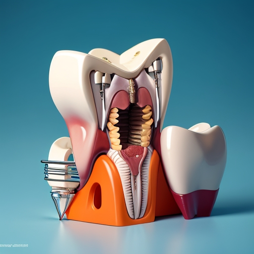

DR. ALEXIS CARDENAS. CIRUJANO ORAL
VISION
El Consultorio Odontológico Especializado Dr. Alexis Cardenas para 2024 quiere ser líder en el mercado de la Región del Sumapaz en los servicios de odontología especializada para mejorar la salud bucal y estética de nuestros pacientes, siendo la excelencia, la atención personalizada, el nivel profesional y humano, el compromiso y la permanente inversión en conocimientos y tecnología, pilares fundamentales de nuestra empresa para así ser referente y la primera opción de consulta en la ciudad de Fusagasugá y la región del Sumapaz.
OBJETIVOS
Nuestra empresa, CONSULTORIO ODONTOLOGICO ESPECIALIZADO DOCTOR ALEXIS CARDENAS CEBALLOS, tiene como objetivo solucionar los problemas e inquietudes orales de nuestros pacientes, mediante una atención odontológica especializada de forma personalizada, eficiente y con los máximos estándares de calidad buscando siempre la excelencia, usando la última tecnología en nuestros equipos.
CIRUGIA ORAL
Especialidad quirúrgica odontológica que se encarga de solucionar alteraciones tanto de tejidos duros (huesos y dientes) (cordales, dientes incluidos) o blandos (mucosas, encías) de la cavidad bucal.
IMPLANTOLOGIA
Disciplina de la odontología que se dedica a la sustitución de dientes perdidos mediante la colocación quirúrgica de un implante dental (TITANIO) en los maxilares.
REHABILITACION ORAL
Disciplina de la odontología que se encarga de la restauración de las piezas dentales devolviendo la función, estética y armonía oral.
ENDODONCIA

Es la ciencia de la odontología que estudia el tratamiento de los conductos dentales sea por una infección o para rehabilitar la estructura dental.
PERIODONCIA
Ciencia de la odontología que se ocupa del diagnóstico y tratamiento de enfermedades de las encías, que puede provocar la perdida de piezas dentales. (GINGIVITIS Y PERIODONTITIS).
ODONTOLOGIA GENERAL
Se centra en el diagnóstico, tratamiento y prevención de los problemas primarios que tienen que ver con la salud bucodental. Incluye no sólo a los problemas que afectan a los dientes, sino también a las encías, el tejido periodontal y la articulación temporomandibular.
DISEÑO DE SONRISA

Es un conjunto de procedimientos que se realizan para diseñar la sonrisa ideal del paciente mediante el estudio de la relación que existe entre los dientes las encías y los labios del paciente (carillas, blanqueamiento dental, diseño de encías).
ORTODONCIA
Rama de la odontología que se encarga de identificar los problemas de mal posición y mal oclusión dental y así mismo dar un diagnóstico y plan tratamiento específico para mejorar estás irregularidades dentales.
BLANQUEAMIENTO
El blanqueamiento dental es un tratamiento cuyo objetivo es aclarar el color de los dientes, eliminando las manchas y la decoloración, es más efectivo sobre las manchas extrínsecas o superficiales. Devuelve luminosidad a tus dientes y recupera su color natural.
BICHECTOMIA

La bichectomia tiene por objetivo definir el contorno facial, resaltando los pómulos y el borde de la mandíbula, obteniendo un perfil más armonioso.
Es un procedimiento quirúrgico relativamente sencillo de mínima invasión, dónde se retiran las bolsas de bichat (grasa) es ambulatorio, se realiza con anestesia local y con la mejor tecnología de punta.
LIPOSUCCION
Es una cirugía mínimamente invasiva en la que se busca eliminar el exceso de tejido graso bajo la barbilla para que la papada desaparezca, consiguiendo así que el borde mandibular quede más definido y que el cuello y el rostro en general adquieren un aspecto más joven y saludable.